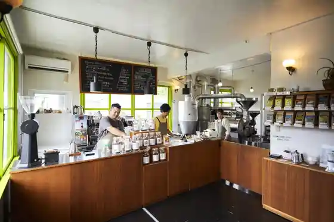
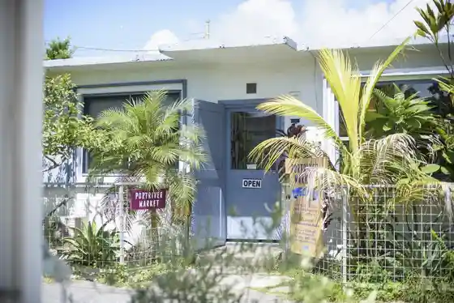

AVO.HANDMADE
Urasoe, Okinawa · 090-1369-9529 · Official / source link
BAGASSE UPCYCLE
Urasoe, Okinawa · 098-988-3100 · Official / source link
OKINAWA CERADO COFFEE Beans Store
Urasoe, Okinawa · 080-6486-4107 · Official / source link

PORTRIVER MARKET
Urasoe, Okinawa · 098-911-8931 · Official / source link

Proots
Urasoe, Okinawa · 098-955-9887 · Official / source link
RAiNBOW SOUL OKiNAWA Minatogawa Suteitsusaidotaun Mise
Urasoe, Okinawa · 080-3979-4747 · Official / source link
SHIMA DENIM WORKS
Urasoe, Okinawa · 098-988-3100 · Official / source link
(Uranishi Riubo Mise) (Kabu) Riubo Ryoko Sabisu
Urasoe, Okinawa · 098-876-7991 · Official / source link
Atorie Yu
Urasoe, Okinawa · 098-800-1297 · Official / source link
Kyanpingukarentaru Tomiiappu
Urasoe, Okinawa · 080-9108-8692(9:00~18:00) · Official / source link
San'e Urasoe Nishikaigan Parukoshitei
Urasoe, Okinawa · Official / source link
Sutekihausu 88Jr. Urasoe Parukoshitei Mise
Urasoe, Okinawa · 098-894-8801 · Official / source link
Sutokkurabo Okinawa Urasoe Mise
Urasoe, Okinawa · 0120-21-0902 · Official / source link
Bintejishoppu Amerikan'uebu
Urasoe, Okinawa · 098-988-3649 · Official / source link
Feisharuesutesaron Kyu Misono
Urasoe, Okinawa · 098-873-0139 · Official / source link
Furesshu Plaza Yunion Kyozuka Mise
Urasoe, Okinawa · 098-870-6630 · Official / source link
I So no Taka O Haka (Ken Shitei Yukei Bunkazai)
Urasoe, Okinawa · Official / source link
Koeki Zaidanhojin National Gekijo Okinawa Un'ei Zaidan
Urasoe, Okinawa · 098-871-3311 · Official / source link
Joseisenyo Oirumassaji Senmonten | Spa läka Supa Reka
Urasoe, Okinawa · Official / source link
Okinawa De Umi Wo Asobu Nara MaLinLin-DIVE!!
Urasoe, Okinawa · 070-3250-776 · Official / source link
Urasoe Art Museum
Urasoe, Okinawa · 098-879-3219 · Official / source link
Minatogawa Suteitsusaidotaun
Urasoe, Okinawa · Official / source link
Kurenai Ryu
Urasoe, Okinawa · 098-914-4855 · Official / source link